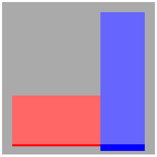

Coding Style (and related)¶
Getting the style right is easy: a simple glimpse at the code will tell you if it looks nice, and anyway most of IDEs are able to fix most of it by themselves.
This is why there is absolutely no excuse to get the style wrong. Having a code uniformly-looking helps reading the code afterwards, by a peer or by yourself, and also helps seeing the structure of it. This does reduce the number of bugs in the code you write and in the changes others will make as well.
Basically, once the good habits taken, they are totally painless to apply. We wouldn’t want to reject free improvement, right?
All-languages recommendations¶
Those recommendations apply for all languages or kinds of text file you might have to create.
White spaces¶
There is two kinds of whitespaces in a source code:
- indentation
- Whatever indentation you choose, keep it consistent in all the project.
- trailing whitespaces
- Often, some whitespaces will be found after the line itself. This is bad. For each trailing space, a kitten dies.
In order to prevent any of those two to get wrong, there is two things to do:
- Enable the display of whitespaces in your IDE
- Enable the option that removes trailing whitespaces on save
File “format”¶
Plain-text/source code files must respect a few conventions
- All files are encoded in UTF-8.
- If possible, start the file with a Vim modeline, even if you don’t use Vim, this is helpful to guess the indentation and line length settings.
- Use Unix (n) line endings.
- The last line must include a line ending.
- No caps nor non-ASCII characters in file names, as those lead to problems due to inconsistencies accross operating systems.
Note
Why the fuck shoud the last line include a line ending you ask? Well, all lines are terminated with a line ending, why would the last one not be? Furthermore, if in a further revision of the code a line is added after the ex-last line, well that ex-last line will be considered by Git as modified because a line ending was added to it, which is not a good thing since that line was not actually modified.
Lines length¶
Why should we bother about lines length since text editors of this century all know how to wrap text?
The answer is quite simple and lies in the fact that even if editors can wrap lines, I am sorry to tell you that your brain cannot hold too much information at once. By convention, a line width is fixed, and should your line get longer than this, it probably means that it has too much information and that it should be chopped down for clarity.
Take the following example:
if some_shitty(thing(unreadable)) == some(other_stuff) and a < b and pouet \
& BLAH and (something or (something_else and shit)):
pass
Now consider this:
if some_shitty(thing(unreadable)) == some(other_stuff) \
and a < b \
and pouet & BLAH \
and (something or (something_else and shit)):
pass
The most readable snippet appears clearly.
Spelling, grammar and meaning¶
The official language for everything related to the code is English. The reason behind this is that everybody speaks english, so if the team ever had to get international this wouldn’t be a hurdle. And anyways, code in any other language feels awkward.
Meaning¶
However, not everybody is fluent, and there is a lot of false friends around. This is why when you name something, you have to be 100% positive that the meaning is right. Especially in data models, where any change can be painful.
For this reason, in case of any doubt just use a dictionnary. And check carefully the meaning of any database field before commiting it.
Grammar¶
Please use a correct order of words in variables. It is basically “adjective”_”subject”_”complement”. Like in max_brace_area. Not like area_max_brace.
Spelling¶
No spelling mistakes are allowed in variable names. Beyond the fact that it makes them look nicer, since most of the languages we use are dynamic, it helps avoiding typos.
By example, if you type my_stuff.attrbute and that your IDE indicates a spelling mistake, then you will notice that indeed you did want to write my_stuff.attribute.
Again, this is a simple way to make less bugs.
Not all words will be in the dictionnary, but if you are absolutely sure that the word exists, then feel free to add it to your dictionnary so it won’t bother you anymore.
Common pitfalls¶
Let us go through some common issues met in variable names:
- nb_objects makes a few mistakes
- Avoid using abbreviations, as they could be misunderstood
- Maybe it’s just me, but number feels awkward in this case, count sounds better
- The order of words is wrong, the correct way would be objects_count
Conventions¶
Most languages have established conventions on formatting the source code, like the PEP8, jslint, PSR-2, etc.
One might like or not the style of those conventions, however since they are widely used, there is no reason not to follow them. Other developpers will know them and will be more confortable reading the code.
Javascript¶
Javascript leaves so much freedom to the developper that it becomes really easy to make low quality and buggy code.
Of course, we want quality code, but even more, we want code that comes without surprises and that any developper used to the style can easily read. Those guidelines are thus very important if we want the Javascript development to go smoothly.
Linting¶
As stated before, Javascript leaves too much freedom. In fact, some things that can be done are harmful and error-prone. This is why Douglas Crockford created a tool named jslint. It ensures that your code keeps a consistent formatting, and that you do not use dangerous features. He explains most of his reasons in a talk that anyone is strongly advised to watch, as well as in this page.
Here is how we configure jslint in ActivKonnect:
/*jslint indent: 4, maxlen: 100*/
- indent: 4
- As expected, the indentation is of 4 spaces. This is the default, but let’s state it explicitly just to make it very clear.
- maxlen: 100
- The PEP8 explains it well, your brain can’t handle an infinitely long strong. The industry standard would be around 80 columns, however as we have control over our own screens, we think it is best to use a 100 columns conventions.
Variable naming¶
The rules are pretty simple:
- Constants
- All constants (aka content that should never vary, even though constants do not actually exist in JS) should be named in all-uppercase, and words must be separated by underscores. Ex: THIS_IS_A_CONSTANT
- Objects
- Any constructor (aka something you have to call with new) must be named in camel case and begin with an upper case. Ex: MyObjectName
- Variables and the rest
- Everything else comes in camel case and must not begin with an upper case. Ex: myVariableName
File template¶
All Javascript files must be structured this way
/*vim: fileencoding=utf8 tw=100 expandtab ts=4 sw=4 */
/*jslint indent: 4, maxlen: 100 */
/*global angular */
// Good Morning Planet Website
// (c) 2014 ActivKonnect
(function (ng) {
'use strict';
// Code goes here
}(angular));
There is a vim modeline, as explained in File “format”.
The JSLint options, that should never vary.
List of global variables. This helps keeping track of dependencies. Usual suspects are angular, _ and jQuery.
The copyright statement, quite obviously.
All the code is included in a IIFE in order to:
- Minify the name of the global variables by passing them as arguments
- Enable the strict mode
Object template¶
There is many ways to create objects in Javascript, but we have to stay consistent in the way we do it. The stucture presented below results of many trials and errors, and should work well in all situations.
Without inheritance¶
MyObject = function (argument1, argument2) {
var self = this,
privateMember1,
privateMember2,
// Methods
method1,
method2,
method3;
// Public members
self.publicMember1 = 42;
self.publicMember2 = false;
// Method bodies
method1 = function () {
// Method 1 code
};
method2 = function () {
// Method 2 code
};
method3 = function () {
// Method 3 code
};
// Exports
self.method1 = method1;
self.method2 = method2;
(function () {
// Constructor code
}());
}
Some explanations on the motivations behind this template:
Checkout out what Crockford has to say on the matter.
The self = this allows you to safely access the object from its methods and avoid the tricky behaviour of this.
Private members are declared as local variables of the constructor’s closure. They can never be accessed from the outside, so be careful about what you put there.
Public members are defined as members of self.
All methods (public and private) are declared in a var statement. Why declare them here and not use regular named functions? Because according to JSLint, you can’t reference a symbol that hasn’t been defined yet (let’s skip the reasons of that), so if methods were not defined this way, then you wouldn’t be able to call method2() from method1(), by example.
Public methods methods are declared with statements like self.method1 = method1.
- Doing so makes it possible to switch a method from private to public without any refactoring.
- It helps minification a lot. If you call method3() directly, the minifier can rename it as it pleases him. However, if you call self.method3(), then the minifier will only be able to rename self and will leave method3 untouched.
The code that would go in the constuctor if you used a traditionnal OO language goes into an IIFE.
- It helps readability, because you know exactly where the code begins and ends, and it is always located in the same place.
- If you want a local variable that does not have to be a private member, you can declare it at the beginning of the IIEF. This way, it will not stay in the object forever.
With inheritance¶
Some tests were conducted to see what inheritance patterns could be used, however currently there is not enough use of it to actually decide anything.
Anyways, it’s best to create small orthogonal objects than a big comprehensive object with a huge genealogy tree.
Python¶
There is not much to be said here about Python, since the Python community is quite organized yet, and almost everything already has best practices determined.
Use the pythonic way¶
The Python language is very flexible, and you can very easily replicate what you would write in other languages. However, this is a trap, as many things have a pythonic way of doing them, and it’s often different from other languages, and especially from Java.
To name a few:
- Not everything has to be in classes. Stand-alone functions are fine too.
- There is many literals for maps, lists, tuples, sets, etc. Use them.
- Use the property built-in instead of creating getters and setters the way you would do it in Java.
LESS/CSS¶
No official documentation exists or stands out for CSS, and even fewer regarding LESS. However, the following inspirations were used here:
- @mdo’s Code Guide
- Written by @mdo, one of the guys behind Bootstrap, is basically interesting, except for a few unexplained weird things like the choice to omit the 0 in small floats (0.5 vs .5), and the advice to make one-liner declarations.
- Github’s Guideliens
- A few interesting ideas, their style is documented with KSS, which is something we might end up doing.
- CSS Guidelines
- Some high-level rules for writing clean CSS, which are basically specialized in this document.
Whitespaces¶
- Use soft-tabs with a two space indent. Spaces guarantee that code renders the same way accross editors, and two spaces is the most used convention in CSS.
- Put spaces after : in property declarations, but not before.
- Put spaces before { in rules declarations.
- Put line breaks between rulesets.
- When grouping selectors, keep individual selectors to a single line.
- Place } at the end of declaration blocks on a new line.
- No more than a single declaration per line, for readability and error reporting.
- Always put a space after a coma
Formatting¶
- For colors, use whenever possible, by order of priority
- The pre-defined variable for that color
- Color names, like white
- Short-hand notations, like #abc
- Hex colors, like #fabb00
- rgba(), like rgba(1, 1, 1, 0.5)
Don’t put units with zero. 0 is right, 0px is wrong.
A few exemple of what is right or wrong:
/* Bad CSS */
.selector, .selector-secondary, .selector[type=text] {
padding:15px;
margin:0px 0px 15px;
background-color:rgba(0,0,0,.5);
box-shadow:0px 1px 2px #CCC,inset 0 1px 0 #FFFFFF
}
/* Good CSS */
.selector,
.selector-secondary,
.selector[type="text"] {
padding: 15px;
margin-bottom: 15px;
background-color: rgba(0, 0, 0, 0.5);
box-shadow: 0 1px 2px #ccc, inset 0 1px 0 #fff;
}
Declaration Order¶
Place property declarations in that order:
- Positioning
- Box model
- Animations
- Typographic
- Visual
- Other
- LESS Nested Declarations
Here is an exemple:
.declaration-order {
/* Positioning */
position: absolute;
top: 0;
right: 0;
bottom: 0;
left: 0;
z-index: 100;
/* Animation */
.lh-transition(300ms ease all);
/* Box-model */
display: block;
float: right;
width: 100px;
height: 100px;
/* Typography */
font: normal 13px "Helvetica Neue", sans-serif;
line-height: 1.5;
color: #333;
text-align: center;
/* Visual */
background-color: #f5f5f5;
border: 1px solid #e5e5e5;
border-radius: 3px;
/* Misc */
opacity: 1;
}
Vendor prefixes¶
Many modern CSS features depend on vendor prefixes. In order to eliminate the difference between browsers, we use the prefixed version of LESS Hat, which automatically generates styles for every browser, including for complex properties like gradients.
It must always be used for properties that it handles, and vendor prefixes must not be written manually.
Selectors¶
A lot has been written about selectors, and it is mostly summarized in the CSS Guidelines. What is said in there has to be kept in mind, but with the experience of GMP, a few rules seem to be especially important.
- Try to scope CSS per component
Each component (think “directive” or simply a noticeable UI component) should get its own .gmp-X class. It helps namespacing things under it.
.gmp-my-directive { .some-inside-class { color: white; } // Rest of the code goes here }<div class="gmp-my-directive"> <h1 class="some-inside-class">Stuff</h1> <!-- Rest of the code goes here --> </div>
- Avoid using selectors that go deep into the DOM
If you use a selector like .gmp-my-stuff button, it will affect all the buttons inside your component, including those from third party directives you could decide to include later on.
Better solutions would be .gmp-my-stuff > button if possible or using a class for the button .gmp-my-stuff .stuff-button.
- Factorize styles
In the previous example we select a button inside our component, however in the case of buttons there is much to bet on the fact that this particular button will look like all buttons on the site. For this reason, it could be considered as a component itself, and get its own namespace.
<div class="gmp-my-stuff"> <p> Do something </p> <p> <button class="gmp-stuff-button">Action!</button> </p> </div>
LESS And Magic Numbers¶
One of the worst things that can happen to a CSS stylesheet, is to get it filled with many interdependant values (dimensions, positions, colors, ...) but without knowing where does the calculation comes from. In those cases, changing even the smallest thing can lead to many unwanted side-effects.
In order to compensate that and to document the values, before starting to style, all the useful numbers/colors should be put at the beginning of each component.
Note
Those variables will be scoped to the component, and will not be available outside of it, so you are free to choose a straightforward name for it.
As example, we can take the following piece of abstract act:
The idea is basically to have a box, with a given padding, with two other boxes inside, that keep the padding rule but have a bottom border that expands into the padding.
The following LESS code allows to produce just that, with a few configurable variables at the top.
<div class="gmp-box">
<div class="bottom-stuff"></div>
<div class="right-stuff"></div>
</div>
* {
box-sizing: border-box;
}
.gmp-box {
@box-color: #aaa;
@box-to-top: 10px;
@box-to-left: @box-to-top;
@box-size: 300px;
@box-padding: 20px;
@bottom-stuff-width: (@box-size - 2 * @box-padding) * 2 / 3;
@bottom-stuff-height: @box-size / 3;
@bottom-stuff-border-size: 4px;
@bottom-stuff-color: red;
@right-stuff-border-size: 13px;
@right-stuff-color: blue;
position: absolute;
top: @box-to-top;
left: @box-to-left;
.size(@box-size);
background-color: @box-color;
.bottom-stuff {
position: absolute;
left: @box-padding;
bottom: @box-padding - @bottom-stuff-border-size;
width: @bottom-stuff-width;
height: @bottom-stuff-height;
background-color: lighten(@bottom-stuff-color, 20%);
border-bottom: @bottom-stuff-border-size @bottom-stuff-color solid;
}
.right-stuff {
position: absolute;
right: @box-padding;
bottom: @box-padding - @right-stuff-border-size;
top: @box-padding;
width: @box-size - (@box-padding * 2) - @bottom-stuff-width;
background-color: lighten(@right-stuff-color, 20%);
border-bottom: @right-stuff-border-size @right-stuff-color solid;
}
}